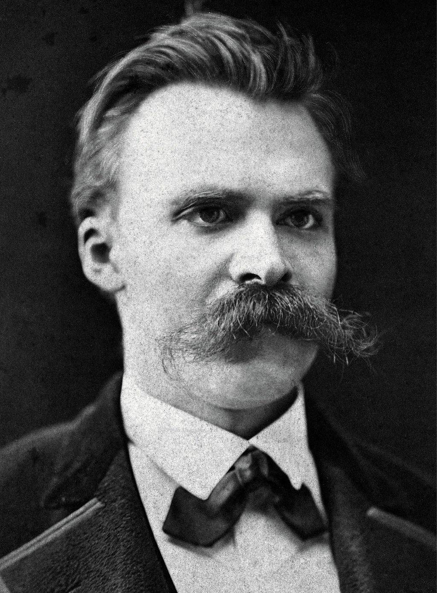

Freedom For The Übermensch!
Who should benefit from
Open Source Success?
Created by: Andy Choens (andy.choens@gmail.com)
Dafynitions
- Free and Open Source Software: FOSS
-
Übermensch: Developed by
the 19th century philosopher
Nietzsche. Translates as "over-man" or
"super-man".
- Four Freedoms: Stallman's 1986 definition of the Four Software Freedoms. Not FDR's Four Freedoms speech from 1941.
How Do You Benefit From FOSS?
FOSS Tools Used By Audience
- Eclipse
- node.js
FOSS End User Tools
The Four Freedoms
- Freedom 0: The freedom to run the program for any purpose.
- Freedom 1: The freedom to study how the program works, and change it to make it do what you wish.
- Freedom 2: The freedom to redistribute copies so you can help your neighbor.
- Freedom 3: The freedom to improve the program, and release your improvements (and modified versions in general) to the public, so that the whole community benefits.
Questions for the Übermensch:
- Question 1:
How are the needs of software developers different from end users?
- Question 2:
Does this mean software developers should have more freedom?
- Question 3:
What is the role of a freedom, if it is not used?
What is the source of Freedom / Morality?
According to Nietzsche:

- Morality does not inherently exist. (Nihilism)
- It is the responsibility / privilege of the Übermensch to define morality.
- How does a theoritical argument from the 19th century impact the digital world?
Geeky Übermensch?
-
Who knew Superman could look like this?
- Henry Cavill, EAT YOUR HEART OUT!
- We are end users too
-
Software Freedom, Today:
- Volkswagon's "cheat devices" -> smart cars
- Google EOL Revolov home-automation (May 15)
- Election Software
- Medical Devices

How Can We Continue The Revolution?
Thank You!
- Produced using Reveal.js &
Presented on a Surface Pro 3, running Fedora 24 -
Photograph of Friedrich Nietzsche:
By F. Hartmann [Public domain or Public domain], via Wikimedia Commons
https://commons.wikimedia.org/wiki/File%3ANietzsche187a.jpg
-
Photograph of Richard Stallman:
By Thesupermat (Own work) [CC BY-SA 3.0 (http://creativecommons.org/licenses/by-sa/3.0)], via Wikimedia Commons
https://commons.wikimedia.org/wiki/File%3ARichard_Stallman_-_F%C3%AAte_de_l'Humanit%C3%A9_2014_-_010.jpg
{kind=link}
{kind=link}
Return To Presentation index.html